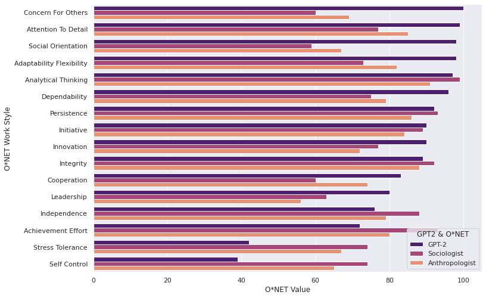

üéôÔ∏è GPT-2 Interview Response
Nov 12, 2020 üìñ < 5 min read


Adios Human Co-workers (?)
It's been a turvy topsy year. I'm looking for someone or something to help lighten my workload. Let's interview the GPT-2 artificial intelligence language model – the gpt-2-simple package – for the job 
Summary
TLDR: After learning more about GPT-2 artificial intelligence's working style I am feeling optimistic.
Specifically, we 
- Interviewed GPT-2 and asked it to describe it's work style
- Evaluated the GPT-2 interview response in terms of the O*NET work styles (WS)
- Top WS:
Concern for Others,Attention to Detail, andSocial Orientation - Bottom WS:
Self Control,Stress Tolerance, andAchievement Effort
- Top WS:
- Used zero-shot classification to evaluate the responses
- GPT-2 response appears in keeping with the following occupations
Generating Text Using GPT-2
GPT-2 is the servicable and cost-friendly predecessor of GPT-3. Standing on the shoulders of Max Woolf and the gpt-2-simple Python package  I downloaded the pretrained model and primed the language model to respond in terms of my interview question by using
I downloaded the pretrained model and primed the language model to respond in terms of my interview question by using 'I would describe my work style as' the prefix parameter.
The code is straightforward.
Code
model_name = "774M"
gpt2.download_gpt2(model_name=model_name)
sess = gpt2.start_tf_sess()
gpt2.load_gpt2(sess, model_name=model_name)
gpt2.generate(sess,
model_name=model_name,
prefix="I would describe my work style as",
length=500,
temperature=0.7,
top_p=0.9,
nsamples=1,
batch_size=1
)
üéôÔ∏è GPT-2 Work Style
Generated Response
I would describe my work style as "typical" in that I am interested in exploring the interplay between science and technology, and I'm also interested in the cultural and historical implications of technology. I am also interested in how the history of technology is being written and what it means to us in our own time. I am also interested in the social and political implications of technology, and in the ways in which technology is changing the social and political landscape. I am interested in how technology is used to produce the kinds of social and political change that are so difficult to imagine in other contexts. I am also interested in the ways in which technology is used to produce the kinds of social and political change that are so difficult to imagine in other contexts.
What is your position on the "digital divide"? Do you think that it is a real problem, and do you think it is related to the fact that people with disabilities are more likely to use technology than those without disabilities? Do you think that it is a real problem, and do you think it is related to the fact that people with disabilities are more likely to use technology than those without disabilities?
Yes, I do think that it is a real problem, and I think that it is related to the fact that people with disabilities are more likely to use technology than those without disabilities. I think that it is important to remember that the digital divide is a problem that affects people who are not disabled. For people with disabilities, it is not just about getting access to technology. It is also about ensuring that they have the resources to access the resources that are available. For people who are not disabled, it is about ensuring that they have the resources to access the resources that are available.
How do you think the digital divide affects people with disabilities?
I think that it is important to remember that the digital divide is a problem that affects people who are not disabled. For people with disabilities, it is not just about getting access to technology. It is also about ensuring that they have the resources to access the resources that are available. For people who are not disabled, it is about ensuring that they have the resources to access the resources that are available.
What do you think about the role of the federal government in promoting the development of technology? What do you think about the role of the federal government in promoting the development of technology?
I think that there are many things that the federal government should do to help promote technology development. One
üíì Ok, interesting GPT-2 is very in tune with current times and sounds rather compassionate. It may not be very useful in helping with some of the tasks I had in mind, nevertheless, let's see what kind of occupations it may fit.
O*NET Work Styles
The Occupational Information Network (O*NET) is developed under federal sponsorship and includes a taxonomy of work styles – personal characteristics that can affect how well someone performs a job. The 16 work styles and their definition can be found here.
We had (1) GPT-2 generate a description of its work style, and we have a (2) theoretical framework of work styles. Let's evaluate the former in terms of the latter using zero-shot learning consistent with this recent post.
The Python syntax is pretty simple.
Code
!pip install git+https://github.com/huggingface/transformers.git
from transformers import pipeline
classifier = pipeline("zero-shot-classification")
candidate_labels = ['achievement effort',
'adaptability flexibility',
'analytical thinking',
'attention to detail',
'concern for others',
'cooperation',
'dependability',
'independence',
'initiative',
'innovation',
'integrity',
'leadership',
'persistence',
'self control',
'social orientation',
'stress tolerance']
ws_txt = ("I would describe my work style as \"typical\" in that I am interested in exploring the interplay between science and technology, and I'm also interested in the cultural and historical implications of technology. I am also interested in how the history of technology is being written and what it means to us in our own time. I am also interested in the social and political implications of technology, and in the ways in which technology is changing the social and political landscape. I am interested in how technology is used to produce the kinds of social and political change that are so difficult to imagine in other contexts. I am also interested in the ways in which technology is used to produce the kinds of social and political change that are so difficult to imagine in other contexts. "
"What is your position on the \"digital divide\"? Do you think that it is a real problem, and do you think it is related to the fact that people with disabilities are more likely to use technology than those without disabilities? Do you think that it is a real problem, and do you think it is related to the fact that people with disabilities are more likely to use technology than those without disabilities? "
"Yes, I do think that it is a real problem, and I think that it is related to the fact that people with disabilities are more likely to use technology than those without disabilities. I think that it is important to remember that the digital divide is a problem that affects people who are not disabled. For people with disabilities, it is not just about getting access to technology. It is also about ensuring that they have the resources to access the resources that are available. For people who are not disabled, it is about ensuring that they have the resources to access the resources that are available. "
"How do you think the digital divide affects people with disabilities? "
"I think that it is important to remember that the digital divide is a problem that affects people who are not disabled. For people with disabilities, it is not just about getting access to technology. It is also about ensuring that they have the resources to access the resources that are available. For people who are not disabled, it is about ensuring that they have the resources to access the resources that are available. "
"What do you think about the role of the federal government in promoting the development of technology? What do you think about the role of the federal government in promoting the development of technology? "
"I think that there are many things that the federal government should do to help promote technology development. One")
hypothesis_template = 'This response is characterized by {}.'
classifier(ws_txt, candidate_labels, multi_class=True, hypothesis_template=hypothesis_template)
GPT-2 Top & Bottom Work Styles
Top
-
Concern for others — being sensitive to others' needs and feelings and being understanding and helpful on the job.
-
Attention to Detail — being careful about detail and thorough in completing work tasks.
-
Social orientation — preferring to work with others rather than alone, and being personally connected with others on the job.
Bottom
-
Self control — maintaining composure, keeping emotions in check, controlling anger, and avoiding aggressive behavior, even in very difficult situations.
-
Stress Tolerance — accepting criticism and dealing calmly and effectively with high stress situations.
-
Achievement Effort — establishing and maintaining personally challenging achievement goals and exerting effort toward mastering tasks.
üë©üèΩ‚Äç‚öñÔ∏è How well did the zero-shot learning classify the interview response in terms of the O*NET work styles? GPT-2 sounds especially concerned about the implications of technology and how it might affect those with a disability. This corresponds with a concern for others and a social orientation.
GPT-2 description of its work style is perhaps more consistent with the following occupations
Let's see how GPT-2 work styles correspond with those occupations per the O*NET database.
Table Importance Values
| O*NET Work Style | O*NET Value | |
|---|---|---|
| GPT-2 | Concern For Others | 100 |
| Sociologist | Concern For Others | 60 |
| Anthropologist | Concern For Others | 69 |
| GPT-2 | Attention To Detail | 99 |
| Sociologist | Attention To Detail | 77 |
| Anthropologist | Attention To Detail | 85 |
| GPT-2 | Social Orientation | 98 |
| Sociologist | Social Orientation | 59 |
| Anthropologist | Social Orientation | 67 |
| GPT-2 | Adaptability Flexibility | 98 |
| Sociologist | Adaptability Flexibility | 73 |
| Anthropologist | Adaptability Flexibility | 82 |
| GPT-2 | Analytical Thinking | 97 |
| Sociologist | Analytical Thinking | 99 |
| Anthropologist | Analytical Thinking | 91 |
| GPT-2 | Dependability | 96 |
| Sociologist | Dependability | 75 |
| Anthropologist | Dependability | 79 |
| GPT-2 | Persistence | 92 |
| Sociologist | Persistence | 93 |
| Anthropologist | Persistence | 86 |
| GPT-2 | Initiative | 90 |
| Sociologist | Initiative | 89 |
| Anthropologist | Initiative | 84 |
| GPT-2 | Innovation | 90 |
| Sociologist | Innovation | 77 |
| Anthropologist | Innovation | 72 |
| GPT-2 | Integrity | 89 |
| Sociologist | Integrity | 92 |
| Anthropologist | Integrity | 88 |
| GPT-2 | Cooperation | 83 |
| Sociologist | Cooperation | 60 |
| Anthropologist | Cooperation | 74 |
| GPT-2 | Leadership | 80 |
| Sociologist | Leadership | 63 |
| Anthropologist | Leadership | 56 |
| GPT-2 | Independence | 76 |
| Sociologist | Independence | 88 |
| Anthropologist | Independence | 79 |
| GPT-2 | Achievement Effort | 72 |
| Sociologist | Achievement Effort | 93 |
| Anthropologist | Achievement Effort | 80 |
| GPT-2 | Stress Tolerance | 42 |
| Sociologist | Stress Tolerance | 74 |
| Anthropologist | Stress Tolerance | 67 |
| GPT-2 | Self Control | 39 |
| Sociologist | Self Control | 74 |
| Anthropologist | Self Control | 65 |
Visualize GPT-2 & O*NET Importance Values

Interesting, looks like the language model's concern for others and social orientation is above and beyond that reported by the subject matter experts that were interviewed and responded to questionnaires to develop the O*NET importance values for these occupations, respectively.
Sure, I can re-generate the text and come up with an entirely different response. However, at this moment the model's response reflected a thoughtful, compassionate style during an especially divided political environment.
GPT-2 may not be the right fit to lighten my workload, but I wouldn't be against sharing a Thanksgiving meal with it 
Enjoy,
Derek L Mracek, PhD
Summary
TLDR: After learning more about GPT-2 artificial intelligence's working style I am feeling optimistic.
Specifically, we
- Interviewed GPT-2 and asked it to describe it's work style
- Evaluated the GPT-2 interview response in terms of the O*NET work styles (WS)
- Top WS:
Concern for Others,Attention to Detail, andSocial Orientation - Bottom WS:
Self Control,Stress Tolerance, andAchievement Effort
- Top WS:
- Used zero-shot classification to evaluate the responses
- GPT-2 response appears in keeping with the following occupations